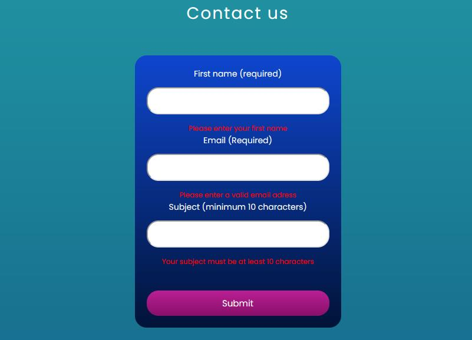

Cross project
Changes made
Contact form
I have made somee changes for the contact form valiadtion. The validation used to go one by one on the errors. Now it displays all the errors at once. This sollution is better for the users, because they could see all their errors at once, instead of one. For the validation to pass it needs fill every critera for the form. When it passes it will send an alert, which tells the users that the message has been sent.
